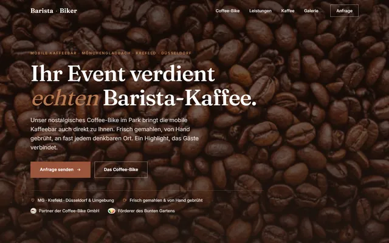

Was diese Seite ist, warum sie entstanden ist und wie es weitergehen könnte. In wenigen Minuten lesbar.
Hoffmanns hat aktuell keine eigene Webseite: cafehoffmanns.com zeigt seit längerem nur den Satz „Unsere Website wird überarbeitet". Wer bei Google auf „Website" klickt, landet in einer Sackgasse. Dieser Entwurf zeigt, wie der erste Eindruck stattdessen aussehen könnte.
Alles stammt aus Ihrem eigenen Auftritt: das Logo mit den Sonnenstrahlen, das Himmelblau Ihres Banners, die warmen Töne Ihres Wohnzimmers.
Die Schriften sind Poppins (rund und freundlich, passend zum sonnigen Charakter) und Nunito Sans für den Fließtext. Beide liegen direkt auf dem Server, statt bei jedem Besuch von Google geladen zu werden. Ihr geschwungenes Original-Logo bleibt unangetastet und trägt den Auftritt.
Stand 14.07.2026, live geprüft.
Wer „Frühstück Mönchengladbach" oder „Café am Minto" sucht, findet Sie über Google Maps, aber die Website als Vertrauensanker fehlt. Gäste, die vor dem Besuch Karte, Zeiten oder Atmosphäre prüfen wollen, springen ab oder landen bei anderen. Und KI-Suchen können ein Café ohne Website kaum empfehlen.
Ihre Marke funktioniert: ein erkennbares Logo, ein gepflegtes Instagram-Profil, zwei gut bewertete Standorte und Gäste, die das Team ausdrücklich loben. Dieser Entwurf erfindet nichts Neues, er macht das Vorhandene sichtbar.
Die Seite besteht aus schnellen, statischen Dateien: keine Updates, keine Plugins, keine Cookies, kein Cookie-Banner. Ihre Domain cafehoffmanns.com existiert bereits und kann direkt genutzt werden; bis dahin läuft der Entwurf als unverbindliche Vorschau parallel.
Pflegbare Speisekarte, Anfrageformular, News-Bereich oder datensparsame Besuchsstatistik: alles in Komfortstufen nachrüstbar, von kostenfrei (gegen gelegentliches Selbst-Einloggen) über nutzungsbasiert bis zur kleinen Monatsgebühr. Sie wählen, was zu Ihnen passt.
Eine Auswahl weiterer Seiten aus meiner Werkstatt, von live betriebenen Kundenseiten bis zu Entwürfen.


Pilates- und Reformer-Studio in Essen, live betriebene Kundenseite mit Online-Buchung.
Live ansehen ↗
Mobiles Kaffeecatering aus Mönchengladbach, live betriebene Kundenseite.
Live ansehen ↗
Eismanufaktur in Mönchengladbach, Redesign-Entwurf in der Street-Optik der Marke.
Ansehen ↗

Ein klar umrissener Umfang zum Festpreis. Fest heißt fest: kein Fass ohne Boden, keine Nachforderungen.
Weder anonyme Großagentur mit langen Wegen noch Gelegenheitsanbieter: ein Ansprechpartner, alles aus einer Hand, direkt aus Mönchengladbach.
Speisekarte, Formular, News oder Statistik: nachrüstbar in Komfortstufen, von kostenfrei bis zur kleinen Monatsgebühr.
Volle Nutzungsrechte, kein Abo-Zwang, kein Nachverkauf durch die Hintertür. Sie können jederzeit alles mitnehmen.